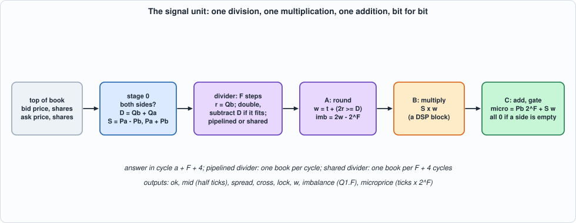
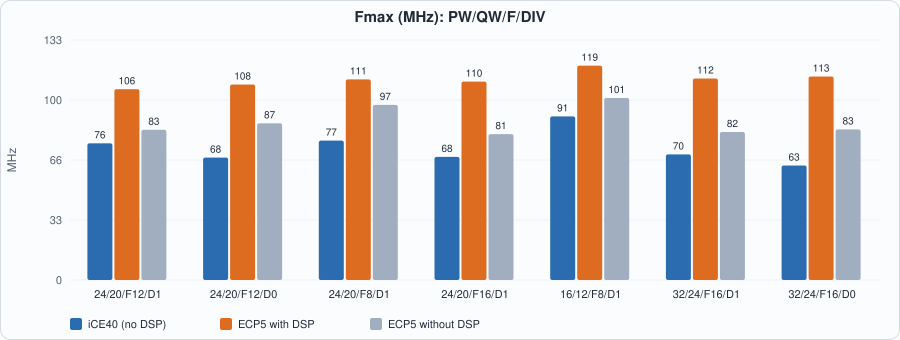
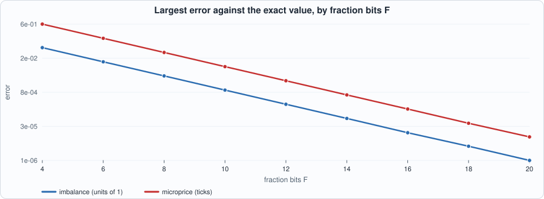
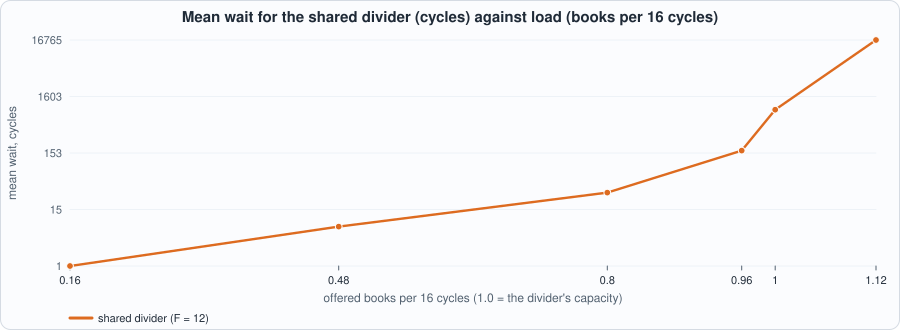

22. Fixed-Point Signals: Imbalance, Mid and Microprice, a Division That Is Exact to the Bit, and What a DSP Block Buys¶
About the kestrels in this picture
- Nankeen kestrel (Falco cenchroides) is found across Australia and nearby islands. It hovers over open country and grassland, and often hunts along roadsides and fields.
- Common kestrel (Falco tinnunculus) ranges across Europe, Asia and Africa. It is famous for hovering: it faces the wind and holds its head almost still while its body adjusts, searching the ground below before it drops onto prey. A much-cited study reported that voles' scent trails reflect ultraviolet light, which kestrels may be able to see.
The scene is imaginary and the birds are stylised drawings.
What you will see: the trigger of Chapter 21 compares a message with constants. A signal is a number computed from the book: how lopsided the quantity at the touch is (the imbalance), where the price would sit if it leaned toward the thinner side (the microprice), the mid and the spread. Computing them in hardware means choosing a fixed-point format, a rounding rule and an overflow rule, and then proving that the hardware does exactly that, to the last bit. The chapter writes the arithmetic as a specification in integers, builds a unit with one division (F restoring steps, pipelined or shared), one multiplication and one addition, tests it bit for bit against the specification, measures the error against the exact rational values, and shows what a DSP block saves and what a shared divider costs in waiting.
What you need to know first: Chapter 5 (fixed-point arithmetic, DSP blocks), Chapter 20 (the top of book the unit reads) and Chapter 3 (reading a timing report).
What this chapter builds: rtl/sig.sv (sig and the pin wrapper sig_syn), model/sig_gold.py (the specification, the exact reference, the closed loop and the stimulus), tb/sig_tb.sv, tools/ch22_run.py, tools/ch22_example_a.py, tools/ch22_example_b.py, tools/mut_ch22.py, tools/make_figs_ch22.py.
Scope: what this chapter leaves out, on purpose
The signals are of the best bid and the best ask only (the touch); an imbalance over the top N levels is Exercise 4. Prices are unsigned integers of PW bits (ticks) and shares unsigned of QW bits: the 32-bit values of Chapter 20 must fit (PW <= 32, QW <= 24); a larger share count is outside the contract. No state: each answer is a function of one top of book. One division, restoring, one bit per step; a faster divider (radix 4, a reciprocal and Newton's method) is an exercise. The multiplication is the DSP's, not pipelined inside it (the clock result says so). Only the best bid and ask are read; whether the book is crossed is reported (cross, lock), not repaired. This is a model of a design, not a product.
What the signals are¶
model/sig_gold.py states the arithmetic in a few lines of integer Python. With Pb, Qb the best bid's price and shares and Pa, Qa the best ask's:
| output | definition | format |
|---|---|---|
ok |
Qb > 0 and Qa > 0; when 0, every output is 0 |
1 bit |
mid2 |
Pa + Pb: the mid in half ticks, exact |
PW + 1 bits, unsigned |
spread |
Pa - Pb (negative if the book is crossed), with cross (spread < 0) and lock (spread = 0) |
PW + 1 bits, signed |
w |
round_half_up(Qb x 2^F / (Qa + Qb)): the bid's share of the quantity at the touch |
F + 1 bits, 0 to 2^F |
imb |
2 w - 2^F: the imbalance (Qb - Qa) / (Qb + Qa) in units of 2^-F |
F + 2 bits, signed |
micro |
Pb x 2^F + spread x w: the microprice Pb + spread x Qb / (Qa + Qb) in ticks x 2^F |
PW + F bits, unsigned |
The microprice is the price you get by weighting each side's price by the other side's quantity: (Pa x Qb + Pb x Qa) / (Qa + Qb). If the bid is thick (Qb large) the next trade is more likely to lift the ask, and the microprice leans toward the ask. It always lies between the two prices, because w is between 0 and 1.
One division, done once. w is the only quotient; the imbalance and the microprice are computed from the rounded w (imb = 2w - 2^F is exact in w, and micro is an exact integer product and sum), so no number is rounded twice by a different rule. The imbalance therefore has a resolution of 2^-(F-1) (only even values), and the microprice error is at most spread / 2^(F+1). Rounding is half up, so the unit is not antisymmetric at exact halves: swap the sides and an exact half rounds up on both, so w(Qb, Qa) + w(Qa, Qb) is 2^F or 2^F + 1.
Time. A book offered in cycle a is answered in cycle a + L, L = F + 4: F division steps, one rounding stage, one multiplication stage, one addition stage. With DIV = 1 (a pipelined divider) the unit accepts a book every cycle; with DIV = 0 (one shared divider step) it is busy until the answer is visible and accepts a new book every F + 4 cycles.
#!/usr/bin/env python3
"""Chapter 22: the specification of the signal unit: from the top of book (best bid price and shares, best ask price and shares) to four numbers, in fixed point, bit for bit.
FORMATS. Prices are unsigned integers of PW bits (ticks), shares unsigned of QW bits. F is the number of fraction bits. Both sides must be present (shares > 0 on both) for the signals to exist: ok = (bid shares > 0 and ask shares > 0); when ok = 0 every output is 0.
mid2 = Pa + Pb unsigned, PW + 1 bits, in HALF ticks: exact, no rounding
spread = Pa - Pb signed, PW + 1 bits, in ticks; cross = (spread < 0) and lock = (spread == 0)
w = round_half_up(Qb * 2^F / (Qa + Qb)) unsigned, F + 1 bits, 0 <= w <= 2^F: the bid's share of the quantity at the touch, in units of 2^-F
imb = 2 w - 2^F signed, F + 2 bits, in units of 2^-F: the imbalance (Qb - Qa) / (Qb + Qa) in [-1, 1] (resolution 2^-(F-1): only even values)
micro = Pb 2^F + spread w unsigned, PW + F bits, in ticks x 2^F: the microprice, Pb + spread Qb / (Qa + Qb) = (Pa Qb + Pb Qa) / (Qa + Qb), from the ROUNDED w
w is the only division, done once; imb and micro use it. ROUNDING: round half up (floor(x + 1/2)); the unit is NOT antisymmetric by one unit of w at exact halves (swap the sides and the half rounds up on both).
TIME. A message offered in cycle a is answered in cycle a + L, L = F + 4 (F restoring-division steps, one rounding stage, one multiplication stage, one addition stage). DIV = 1 (pipelined divider) accepts one message per cycle; DIV = 0 (one shared divider step) is busy from the cycle after it accepts until the cycle the answer is visible (L - 1 cycles in which it does not accept): the engine accepts again in cycle a + L."""
import random
from fractions import Fraction
def compute(bpx, bsh, apx, ash, F):
"""-> (ok, mid2, spread, cross, lock, w, imb, micro): the specification, in integers."""
if bsh == 0 or ash == 0: return (0, 0, 0, 0, 0, 0, 0, 0)
d = bsh + ash; w = (2 * bsh * (1 << F) + d) // (2 * d); s = apx - bpx
return (1, apx + bpx, s, int(s < 0), int(s == 0), w, 2 * w - (1 << F), bpx * (1 << F) + s * w)
def ideal(bpx, bsh, apx, ash):
"""The same quantities in exact rationals (what the fixed point approximates): -> (imbalance, microprice in ticks, mid in ticks) or None."""
if bsh == 0 or ash == 0: return None
d = Fraction(bsh + ash); return Fraction(bsh - ash) / d, (Fraction(apx) * bsh + Fraction(bpx) * ash) / d, Fraction(apx + bpx, 2)
def division(bsh, ash, F):
"""The division as the hardware does it: F restoring steps on the remainder, starting from Qb (< D), then the rounding: -> (t, r) and w = t + (2 r >= D)."""
d = bsh + ash; r = bsh; t = 0
for _ in range(F):
r *= 2
if r >= d: r -= d; t = 2 * t + 1
else: t = 2 * t
return t, r
def run(msgs, pw, qw, f, div=1, gaps=None):
"""Closed loop: msgs[i] = (bpx, bsh, apx, ash) is offered no earlier than cycle sum(gaps[:i + 1]) and held until accepted. DIV 1 accepts every cycle; DIV 0 accepts when idle (L cycles after it last accepted). -> dict(rows, lines, accepted) with rows[c] = (ready, answer visible this cycle or None)."""
L = f + 4; n = len(msgs); arr = []; t = 0
for i in range(n): t += (gaps[i] if gaps else 0); arr.append(t)
qi = 0; t = 0; busy_until = 0; pend = {}; rows = []; lines = []; acc = []
while qi < n or pend or t < busy_until + 2:
offered = msgs[qi] if qi < n and arr[qi] <= t else None
ready = 1 if (div == 1 or t >= busy_until) else 0
rows.append((ready, pend.pop(t, None))); lines.append(offered)
if offered is not None and ready:
pend[t + L] = compute(*offered, f); busy_until = t + L; qi += 1; acc.append(t)
t += 1
if t > 10 * (n + 4) * (L + 2) + sum(gaps or [0]) + 100: break
return dict(rows=rows, lines=lines, accepted=acc)
def expected_rows(res):
"""(cycle, ready, valid, ok, mid2, spread, cross, lock, w, imb, micro) as the testbench prints them."""
out = []
for c, (ready, r) in enumerate(res["rows"]): out.append((c, ready, 0) + (0,) * 8 if r is None else (c, ready, 1) + tuple(r))
return out
def write_stim(path, lines, seed=1):
"""One line per cycle: valid(1), then bid price, bid shares, ask price, ask shares as 32-bit fields (junk when valid = 0), 129 bits as 34 hex digits."""
rng = random.Random(seed)
with open(path, "w") as fh:
for e in lines:
v, b, bs, a, as_ = (1,) + tuple(e) if e else (0, rng.getrandbits(32), rng.getrandbits(32), rng.getrandbits(32), rng.getrandbits(32))
fh.write("%034x\n" % ((v << 128) | (b << 96) | (bs << 64) | (a << 32) | as_))
return len(lines)
def half_books(pw, qw, f):
"""Directed: books whose division lands EXACTLY on a half unit of w (x = Qb 2^F / D = j + 1/2), where the rounding rule decides: D = m 2^(F+1) and Qb = m (1/2), or Qb odd < 2^(F+1) with D = 2^(F+1), for the first few odd Qb and the last few, on both sides."""
out = []; d0 = 1 << (f + 1)
for m in (1, 3):
if m * d0 < (1 << qw):
for qb in (m, m * d0 - m): out += [(100, qb, 102, m * d0 - qb), (102, qb, 100, m * d0 - qb)]
if d0 < (1 << qw):
for qb in (1, 3, 5, d0 // 2 - 1, d0 // 2 + 1, d0 - 3, d0 - 1): out += [(100, qb, 102, d0 - qb), (100, d0 - qb, 102, qb)]
return out
def edge_books(pw, qw):
"""Directed: every combination of prices and shares from sets that hold the boundaries (0, 1, the maximum, a half, the exact-half rounding cases, crossed, locked, equal sides, one side empty)."""
P = [0, 1, 2, 1000, (1 << pw) - 2, (1 << pw) - 1]; Q = [0, 1, 2, 3, 7, 100, (1 << (qw - 1)), (1 << qw) - 2, (1 << qw) - 1]
return [(b, bs, a, as_) for b in P for a in P for bs in Q for as_ in Q]
def random_books(rng, n, pw, qw):
"""Random tops of book: prices around a mid with a spread of 0 to 20 ticks (sometimes crossed), shares from a long-tailed distribution (sometimes 0, sometimes equal)."""
out = []; mid = rng.randrange(100, (1 << pw) - 100)
for _ in range(n):
mid = max(30, min((1 << pw) - 30, mid + rng.randint(-2, 2))); s = rng.choice([0, 1, 1, 2, 3, 5, 8, 20, -1, -3]); b = mid - s // 2; a = b + s
q = lambda: 0 if rng.random() < .05 else min((1 << qw) - 1, int(rng.paretovariate(1.1) * rng.choice([1, 10, 100])))
bs = q(); as_ = bs if rng.random() < .1 else q(); out.append((max(0, min((1 << pw) - 1, b)), bs, max(0, min((1 << pw) - 1, a)), as_))
return out
if __name__ == "__main__":
F = 4
assert compute(100, 10, 102, 30, F) == (1, 202, 2, 0, 0, 4, 4 * 2 - 16, 100 * 16 + 2 * 4) # Qb 10, Qa 30: share 10/40 = 0.25 = 4/16: w = 4, imbalance -0.5 (-8/16), microprice 100 + 2 * 0.25 = 100.5 (1608 / 16)
assert compute(100, 10, 102, 10, F)[5:] == (8, 0, 100 * 16 + 2 * 8) and compute(100, 30, 102, 10, F)[5:] == (12, 8, 100 * 16 + 2 * 12) # equal sides: w = 8 (half), imbalance 0, micro at the mid; bid heavy: w 12, imbalance +0.5
assert compute(100, 0, 102, 10, F) == (0,) * 8 and compute(100, 10, 102, 0, F) == (0,) * 8 and compute(100, 0, 102, 0, F) == (0,) * 8 # a side without shares: no signals
assert compute(102, 10, 100, 30, F)[1:5] == (202, -2, 1, 0) and compute(100, 10, 100, 30, F)[1:5] == (200, 0, 0, 1) # crossed (spread -2, cross) and locked (spread 0, lock)
assert compute(102, 10, 100, 30, F)[7] == 102 * 16 + (-2) * 4 # crossed: micro = 102 - 2 * 0.25 = 101.5, still between the two prices
assert compute(0, 1, 5, 2, 3)[5] == 3 and compute(0, 1, 5, 7, 3)[5] == 1 and compute(0, 1, 1, 15, 3)[5] == 1 # F = 3: Qb/D = 1/3 -> 8/3 = 2.67 -> 3; 1/8 -> 1; 1/16 -> 0.5 -> 1 (round half up)
assert compute(0, 15, 1, 1, 3)[5] == 8 and compute(0, 1, 1, 1, 3)[5] == 4 and compute(0, 255, 1, 1, 3)[5] == 8 # 15/16 * 8 = 7.5 -> 8 (the exact half rounds up on both sides: 0.5 -> 1 above and 7.5 -> 8 here: w(1, 15) + w(15, 1) = 9, not 8); 1/2 -> 4; 255/256 -> 7.97 -> 8
assert compute(0, 1, 1, 15, 3)[5] + compute(0, 15, 1, 1, 3)[5] == 9
for bsh, ash in ((1, 1), (3, 5), (1, 15), (15, 1), (7, 9), (1, 2 ** 20 - 2)): # the division as the hardware does it equals the specification
for f in (3, 8, 12): t, r = division(bsh, ash, f); assert t + (2 * r >= bsh + ash) == compute(0, bsh, 1, ash, f)[5], (bsh, ash, f)
assert expected_rows(run([(100, 10, 102, 30)], 24, 20, 4, 1))[4 + 4][1:3] == (1, 1) and run([(1, 1, 2, 1), (1, 1, 2, 1)], 24, 20, 4, 0, [0, 0])["accepted"] == [0, 8] # L = F + 4 = 8: the answer in cycle 8; the sequential unit accepts again in cycle 8
assert run([(1, 1, 2, 1), (1, 1, 2, 1)], 24, 20, 4, 1, [0, 0])["accepted"] == [0, 1] # the pipelined unit accepts every cycle
hb = half_books(24, 20, 3) # F = 3: D = 16 and Qb = 1, 15, 3, ...: all exact halves (Qb 2^F / D = j + 1/2): division() leaves 2 r == D
assert hb and all(2 * division(b[1], b[3], 3)[1] == b[1] + b[3] for b in hb), [b for b in hb if 2 * division(b[1], b[3], 3)[1] != b[1] + b[3]]
print("sig_gold hand-checked scenarios passed")
The hand-checked scenarios are worked on paper (a book with Qb = 10, Qa = 30 has w = 4/16, imbalance -0.5 and microprice 100.5; equal sides; a missing side; a crossed and a locked book; the exact-half rounding cases at F = 3). The self-test also checks that the division done as the hardware does it (a remainder doubled and reduced F times) gives the same w as the closed formula. They are what checks the model; the RTL is then checked against it.
The hardware¶

Figure 22.1: the stages of the signal unit.- Stage 0 decides
ok, forms the totalD = Qb + Qa, the spread and the mid. - The divider starts with the remainder
r = Qb(which is belowDwhen both sides are present, so the integer part of the quotient is 0) and doesFsteps: double the remainder; if it is at leastD, subtractDand shift in a 1, else shift in a 0. AfterFsteps the quotient bitstarefloor(Qb 2^F / D)and the remainderrsays how close the next bit is. In the pipelined version each step is a stage with its own registers (the remainder, the total, the quotient so far and the values the later stages need); in the shared version one step is reused forFcycles under a counter. - Stage A rounds (
w = t + (2r >= D): the next bit, half up) and forms the imbalance. Stage B multipliesspread x w(signed by unsigned). Stage C addsPb 2^Fand gates every output withok. - The product and the sum are computed modulo 2^(PW+F): the true value lies in range, so the low bits are the answer, and no sign or carry bit is carried that nothing uses.
// Chapter 22: the signal unit. From the top of book (bid price and shares, ask price and shares) to mid (in half ticks), spread, the bid's share of the quantity at the touch w, the imbalance and the microprice, in fixed point, bit for bit as model/sig_gold.py says. One division (F restoring steps, then a rounding), one multiplication, one addition. DIV = 1: a pipelined divider, one message per cycle; DIV = 0: one shared divider step, busy for F + 3 cycles after it accepts a message. Both answer in cycle a + F + 4 for a message accepted in cycle a.
module sig #(parameter int PW = 24, parameter int QW = 20, parameter int F = 12, parameter int DIV = 1) (
input logic clk, input logic rst,
input logic in_valid, input logic [PW-1:0] in_bpx, input logic [QW-1:0] in_bsh, input logic [PW-1:0] in_apx, input logic [QW-1:0] in_ash,
output logic in_ready,
output logic o_valid, output logic o_ok, output logic [PW:0] o_mid2, output logic signed [PW:0] o_spread, output logic o_cross, output logic o_lock,
output logic [F:0] o_w, output logic signed [F+1:0] o_imb, output logic [PW+F-1:0] o_micro);
// ---- stage 0, the message: both sides present, the total quantity, the spread, the mid in half ticks
wire x_ok = (in_bsh != '0) && (in_ash != '0);
wire [QW:0] x_d = {1'b0, in_bsh} + {1'b0, in_ash};
wire signed [PW:0] x_s = $signed({1'b0, in_apx}) - $signed({1'b0, in_bpx});
wire [PW:0] x_m2 = {1'b0, in_apx} + {1'b0, in_bpx};
// ---- the divider: r starts as the bid's shares, F steps of "double, subtract the total if it fits" give the F fraction bits t of Qb / D and a remainder
logic d_v, d_ok; logic [QW:0] d_r, d_d; logic [F-1:0] d_t; logic signed [PW:0] d_s; logic [PW:0] d_m2; logic [PW-1:0] d_pb;
function automatic logic [QW:0] rem_next(input logic [QW:0] r, input logic [QW:0] d); // the remainder after one step
logic [QW+1:0] r2; r2 = {r, 1'b0}; rem_next = (r2 >= {1'b0, d}) ? (QW + 1)'(r2 - {1'b0, d}) : r2[QW:0];
endfunction
function automatic logic bit_next(input logic [QW:0] r, input logic [QW:0] d); // the quotient bit of that step
logic [QW+1:0] r2; r2 = {r, 1'b0}; bit_next = (r2 >= {1'b0, d});
endfunction
if (DIV == 1) begin : pipe
logic v [0:F]; logic ok [0:F]; logic [QW:0] r [0:F]; logic [QW:0] dd [0:F]; logic [F-1:0] t [0:F]; logic signed [PW:0] s [0:F]; logic [PW:0] m2 [0:F]; logic [PW-1:0] pb [0:F];
always_ff @(posedge clk) begin
v[0] <= in_valid; ok[0] <= x_ok; r[0] <= {1'b0, in_bsh}; dd[0] <= x_d; t[0] <= '0; s[0] <= x_s; m2[0] <= x_m2; pb[0] <= in_bpx;
for (int i = 0; i < F; i++) begin
v[i+1] <= v[i] && !rst; ok[i+1] <= ok[i]; dd[i+1] <= dd[i]; s[i+1] <= s[i]; m2[i+1] <= m2[i]; pb[i+1] <= pb[i];
r[i+1] <= rem_next(r[i], dd[i]); t[i+1] <= {t[i][F-2:0], bit_next(r[i], dd[i])};
end
end
assign d_v = v[F]; assign d_ok = ok[F]; assign d_r = r[F]; assign d_d = dd[F]; assign d_t = t[F]; assign d_s = s[F]; assign d_m2 = m2[F]; assign d_pb = pb[F];
assign in_ready = 1'b1;
end else begin : seq
localparam int CW = $clog2(F + 4); localparam logic [CW-1:0] FC = CW'(F); logic busy; logic [CW-1:0] cnt;
always_ff @(posedge clk) begin
d_v <= 1'b0;
if (rst) busy <= 1'b0;
else if (!busy) begin
if (in_valid) begin busy <= 1'b1; cnt <= '0; d_ok <= x_ok; d_r <= {1'b0, in_bsh}; d_d <= x_d; d_t <= '0; d_s <= x_s; d_m2 <= x_m2; d_pb <= in_bpx; end
end else begin
d_r <= rem_next(d_r, d_d); d_t <= {d_t[F-2:0], bit_next(d_r, d_d)}; // steps every busy cycle: the F-th result is taken by the next stage in the cycle the extra steps start
if (cnt == FC - 1'b1) d_v <= 1'b1;
cnt <= cnt + 1'b1; if (cnt == FC + CW'(2)) busy <= 1'b0;
end
end
assign in_ready = !busy;
end
// ---- stage A: the rounding (w = t + (2 r >= D)) and the imbalance 2 w - 2^F
logic a_v, a_ok; logic [F:0] a_w; logic signed [F+1:0] a_imb; logic signed [PW:0] a_s; logic [PW:0] a_m2; logic [PW-1:0] a_pb;
wire [F:0] w_n = {1'b0, d_t} + {{F{1'b0}}, ({d_r, 1'b0} >= {1'b0, d_d})};
wire [F+1:0] imb_n = {w_n, 1'b0} - {1'b0, 1'b1, {F{1'b0}}}; // 2 w - 2^F, in F + 2 bits (two's complement)
always_ff @(posedge clk) begin
a_v <= d_v && !rst; a_ok <= d_ok; a_w <= w_n; a_imb <= imb_n; a_s <= d_s; a_m2 <= d_m2; a_pb <= d_pb;
end
// ---- stage B: the product spread x w (signed x unsigned)
logic b_v, b_ok; logic [F:0] b_w; logic signed [F+1:0] b_imb; logic signed [PW:0] b_s; logic [PW:0] b_m2; logic [PW-1:0] b_pb; logic [PW+F-1:0] b_prod;
always_ff @(posedge clk) begin
b_v <= a_v && !rst; b_ok <= a_ok; b_w <= a_w; b_imb <= a_imb; b_s <= a_s; b_m2 <= a_m2; b_pb <= a_pb;
b_prod <= (PW + F)'(a_s * $signed({1'b0, a_w})); // modulo 2^(PW+F): the value is in range, so the low bits are the answer
end
// ---- stage C: micro = Pb 2^F + spread w, and the outputs (all 0 when a side has no shares)
wire [PW+F-1:0] micro_n = {b_pb, {F{1'b0}}} + b_prod;
always_ff @(posedge clk) begin
o_valid <= b_v; o_ok <= b_ok;
o_mid2 <= b_ok ? b_m2 : '0; o_spread <= b_ok ? b_s : '0; o_cross <= b_ok && b_s[PW]; o_lock <= b_ok && (b_s == '0);
o_w <= b_ok ? b_w : '0; o_imb <= b_ok ? b_imb : '0; o_micro <= b_ok ? micro_n : '0;
end
endmodule
// sig_syn: the same design behind a handful of pins, ONLY so that it fits a chip for the place-and-route runs: the message is shifted in serially, the outputs are registered and folded into one 16-bit word.
module sig_syn #(parameter int PW = 24, parameter int QW = 20, parameter int F = 12, parameter int DIV = 1) (input logic clk, input logic rst, input logic si, input logic sh, output logic [15:0] info);
logic [PW+QW+PW+QW:0] iv; logic ready, ov_, ok_, cr, lk; logic [PW:0] m2; logic signed [PW:0] sp; logic [F:0] w; logic signed [F+1:0] im; logic [PW+F-1:0] mi;
always_ff @(posedge clk) if (sh) iv <= {iv[PW+QW+PW+QW-1:0], si};
sig #(.PW(PW), .QW(QW), .F(F), .DIV(DIV)) u (.clk(clk), .rst(rst), .in_valid(iv[PW+QW+PW+QW]), .in_bpx(iv[PW+QW+PW+QW-1 -: PW]), .in_bsh(iv[QW+PW+QW-1 -: QW]), .in_apx(iv[PW+QW-1 -: PW]), .in_ash(iv[QW-1:0]), .in_ready(ready),
.o_valid(ov_), .o_ok(ok_), .o_mid2(m2), .o_spread(sp), .o_cross(cr), .o_lock(lk), .o_w(w), .o_imb(im), .o_micro(mi));
logic [15:0] x, r1; always_comb x = 16'(m2) ^ 16'(sp) ^ 16'(w) ^ 16'(im) ^ mi[15:0] ^ 16'(mi >> 16) ^ {11'd0, ready, ov_, ok_, cr, lk};
always_ff @(posedge clk) begin r1 <= x; info <= r1; end
endmodule
The tests¶
// Chapter 22 testbench for sig: line k of out/sig_stim.hex (34 hex digits) is the message OFFERED in cycle k: valid(1), bid price, bid shares, ask price, ask shares (32 bits each, junk where valid = 0); the offer is held on the pins whether or not the unit is ready: model/sig_gold.py run() decides which cycle's offer is accepted. Before every clock edge it prints
// C <cycle> <in_ready> <o_valid> <ok> <mid2> <spread> <cross> <lock> <w> <imbalance> <microprice> (zeros when o_valid = 0; spread and imbalance signed)
`timescale 1ns/1ps
`ifndef NC
`define NC 1000
`endif
`ifndef PW
`define PW 24
`endif
`ifndef QW
`define QW 20
`endif
`ifndef F
`define F 12
`endif
`ifndef DIV
`define DIV 1
`endif
module sig_tb;
localparam int NC = `NC, PW = `PW, QW = `QW, F = `F;
logic clk = 0, rst = 1, in_valid = 0; logic [PW-1:0] in_bpx = '0, in_apx = '0; logic [QW-1:0] in_bsh = '0, in_ash = '0; logic [128:0] vec [0:NC-1]; int k, cyc = 0; logic run = 0;
logic in_ready, o_valid, o_ok, o_cross, o_lock; logic [PW:0] o_mid2; logic signed [PW:0] o_spread; logic [F:0] o_w; logic signed [F+1:0] o_imb; logic [PW+F-1:0] o_micro;
sig #(.PW(PW), .QW(QW), .F(F), .DIV(`DIV)) dut (.clk(clk), .rst(rst), .in_valid(in_valid), .in_bpx(in_bpx), .in_bsh(in_bsh), .in_apx(in_apx), .in_ash(in_ash), .in_ready(in_ready),
.o_valid(o_valid), .o_ok(o_ok), .o_mid2(o_mid2), .o_spread(o_spread), .o_cross(o_cross), .o_lock(o_lock), .o_w(o_w), .o_imb(o_imb), .o_micro(o_micro));
always #4 clk = ~clk;
longint sp_p, im_p;
always @(posedge clk) if (run) begin
sp_p = o_valid ? longint'(o_spread) : 0; im_p = o_valid ? longint'(o_imb) : 0;
$display("C %0d %0d %0d %0d %0d %0d %0d %0d %0d %0d %0d", cyc, in_ready, o_valid, o_valid ? o_ok : 1'b0, o_valid ? o_mid2 : '0, sp_p, o_valid ? o_cross : 1'b0, o_valid ? o_lock : 1'b0, o_valid ? o_w : '0, im_p, o_valid ? o_micro : '0);
cyc++;
end
initial begin
$readmemh("out/sig_stim.hex", vec);
repeat (3) @(negedge clk); rst = 0;
for (k = 0; k < NC; k++) begin
in_valid = vec[k][128]; in_bpx = vec[k][96 +: PW]; in_bsh = vec[k][64 +: QW]; in_apx = vec[k][32 +: PW]; in_ash = vec[k][0 +: QW]; run = 1; @(negedge clk);
end
in_valid = 0; repeat (F + 8) @(negedge clk); $finish;
end
endmodule
#!/usr/bin/env python3
"""Chapter 22: the running designs. (1) lint; (2) the model: hand-checked scenarios and the PROPERTIES of the arithmetic checked on 200,000 random books (the microprice lies between the two prices, the imbalance in [-1, 1], the error bounds that follow from rounding w, the near-antisymmetry); (3) the signal unit against the bit-exact model, every output bit in every cycle, in two simulators, for five formats (price bits, share bits, fraction bits) and both dividers, on random books (with gaps and bursts), and on directed books: every combination of prices and shares from a set that holds the boundaries, and books whose division lands exactly on a half unit (where the rounding rule decides)."""
import os, random, subprocess, sys
sys.path.insert(0, os.path.dirname(os.path.abspath(__file__))); sys.path.insert(0, os.path.join(os.path.dirname(os.path.abspath(__file__)), "..", "model"))
import flow, sig_gold as G
R = flow.ROOT; F_ = ["rtl/sig.sv", "tb/sig_tb.sv"]
def rows_rtl(res, cfg, simu="icarus", rtl=F_):
pw, qw, f, div = cfg; n = G.write_stim(os.path.join(R, "out", "sig_stim.hex"), res["lines"])
o = (flow.sim_icarus if simu == "icarus" else flow.sim_verilator)(rtl, "sig_tb", defines=(f"NC={n}", f"PW={pw}", f"QW={qw}", f"F={f}", f"DIV={div}"))[1]
try: return [tuple(int(x) for x in l.split()[1:]) for l in o.splitlines() if l.startswith("C ")]
except ValueError: return [("x",)]
def same(msgs, gaps, cfg, simu="icarus", rtl=F_):
res = G.run(msgs, *cfg, gaps=gaps); got = rows_rtl(res, cfg, simu, rtl); exp = G.expected_rows(res); return got[:len(exp)] == exp and len(got) >= len(exp)
CONFIGS = [(24, 20, 12, 1), (24, 20, 12, 0), (12, 8, 4, 1), (20, 16, 9, 0), (30, 22, 16, 1)]
def make(kind, seed, n, cfg):
pw, qw, f, div = cfg; rng = random.Random(seed)
if kind == "edge": m = G.edge_books(pw, qw) + G.half_books(pw, qw, f); return m, [0] * len(m)
m = G.random_books(rng, n, pw, qw)
if kind == "burst": return m, [0] * n
return m, [rng.choice([0, 0, 1, 3, 20, 40]) for _ in m]
KINDS = ("random", "burst", "edge")
def battery():
"""The mutation runs' test: five formats, the three kinds, Icarus. -> None or the first difference."""
for ci, cfg in enumerate(CONFIGS):
for kind in KINDS:
if kind == "edge" and ci not in (0, 2, 3): continue
for seed in range(1 if kind == "edge" else 2):
try: m, g = make(kind, seed + ci, 150, cfg); ok = same(m, g, cfg)
except Exception as x: return f"crash {type(x).__name__}"
if not ok: return f"{kind}, PW {cfg[0]}, QW {cfg[1]}, F {cfg[2]}, DIV {cfg[3]}"
return None
def battery_model():
"""The model's own test: its hand-checked scenarios. -> None or a description."""
q = subprocess.run([sys.executable, "model/sig_gold.py"], cwd=R, capture_output=True, text=True, timeout=300)
return None if q.returncode == 0 else "hand-checked scenarios"
def properties(n=200000, seed=7):
"""The arithmetic's own properties on random books, in the model: -> dict of counts of violations and the worst errors seen (in units of 2^-F for the imbalance, of ticks / 2^(F+1) per tick of spread for the microprice)."""
rng = random.Random(seed); bad = dict(micro_range=0, imb_range=0, imb_err=0, micro_err=0, antisym=0, w_range=0); worst_i = worst_m = 0.0; cnt = 0
for (b, bs, a, as_) in G.random_books(rng, n, 24, 20):
for F in (8, 12):
ok, m2, s, cr, lk, w, imb, mic = G.compute(b, bs, a, as_, F)
if not ok: continue
cnt += 1; i_ideal, mic_ideal, _ = G.ideal(b, bs, a, as_)
if not 0 <= w <= 1 << F: bad["w_range"] += 1
if not -(1 << F) <= imb <= (1 << F): bad["imb_range"] += 1
lo, hi = sorted((b, a))
if not lo << F <= mic <= hi << F: bad["micro_range"] += 1
ei = abs(imb / (1 << F) - float(i_ideal)) * (1 << F); em = abs(mic / (1 << F) - float(mic_ideal)); worst_i = max(worst_i, ei); worst_m = max(worst_m, em / max(1, abs(s)) * (1 << (F + 1)))
if ei > 1 + 1e-9: bad["imb_err"] += 1
if em > abs(s) / (1 << (F + 1)) + 1e-12: bad["micro_err"] += 1
w2 = G.compute(b, as_, a, bs, F)[5]
if w + w2 not in (1 << F, (1 << F) + 1): bad["antisym"] += 1
return bad, worst_i, worst_m, cnt
if __name__ == "__main__":
if "--battery-model" in sys.argv: print("RESULT", battery_model()); sys.exit(0)
if "--battery" in sys.argv: print("RESULT", battery()); sys.exit(0)
print("== 1. lint gate (Verilator -Wall --lint-only, Yosys 'check')")
for div in (0, 1):
p = subprocess.run(["verilator", "--lint-only", "-Wall", f"-GDIV={div}", "--top-module", "sig", "rtl/sig.sv"], cwd=R, capture_output=True, text=True); w = [l for l in (p.stdout + p.stderr).splitlines() if l.startswith("%Warning") and "DECLFILENAME" not in l]
y = subprocess.run(["yosys", "-p", f"read_verilog -sv rtl/sig.sv; chparam -set DIV {div} sig; hierarchy -top sig; proc; opt_clean; check"], cwd=R, capture_output=True, text=True).stdout
print(f" sig DIV {div}: Verilator warnings {len(w)}, Yosys check problems {len([l for l in y.splitlines() if 'Found and reported' in l and ' 0 problems' not in l])}")
print("\n== 2. the model (python3 model/sig_gold.py) and the properties of the arithmetic on random books")
print(" " + subprocess.run([sys.executable, "model/sig_gold.py"], cwd=R, capture_output=True, text=True).stdout.strip())
bad, wi, wm, cnt = properties()
print(f" {cnt} (book, F) cases with both sides present, F = 8 and 12: violations of 0 <= w <= 2^F: {bad['w_range']}; |imbalance| <= 1: {bad['imb_range']}; microprice between the two prices: {bad['micro_range']};")
print(f" imbalance error <= 1 unit of 2^-F: {bad['imb_err']} violations (worst {wi:.4f} units); microprice error <= spread / 2^(F+1): {bad['micro_err']} violations (worst {wm:.4f} of the bound per tick of spread); w(Qb, Qa) + w(Qa, Qb) is 2^F or 2^F + 1: {bad['antisym']} violations")
print("\n== 3. the unit against the model: every output in every cycle; 4 seeds of 150 messages per row (edge: the directed set, 2,916 books)")
print(f" {'books':7s} {'PW':>3s} {'QW':>3s} {'F':>3s} {'DIV':>3s} | {'cycles':>7s} {'answers':>8s} {'not ok':>7s} {'crossed':>8s} | {'Icarus':>9s} {'Verilator':>10s}")
for kind in KINDS:
for cfg in CONFIGS:
ok = ncyc = nans = nno = ncr = 0; v = "-"; seeds = 1 if kind == "edge" else 4
for seed in range(seeds):
m, g = make(kind, seed, 150, cfg); res = G.run(m, *cfg, gaps=g); ok += same(m, g, cfg); ncyc += len(res["rows"])
for r in res["rows"]:
if r[1]: nans += 1; nno += r[1][0] == 0; ncr += r[1][3]
if seed == 0: v = "PASS" if same(m, g, cfg, "verilator") else "FAIL"
print(f" {kind:7s} {cfg[0]:3d} {cfg[1]:3d} {cfg[2]:3d} {cfg[3]:3d} | {ncyc:7d} {nans:8d} {nno:7d} {ncr:8d} | {ok:6d} of {seeds} {v:>10s}")
To run: python3 tools/ch22_run.py (a few minutes). Recorded output:
== 1. lint gate (Verilator -Wall --lint-only, Yosys 'check')
sig DIV 0: Verilator warnings 0, Yosys check problems 0
sig DIV 1: Verilator warnings 0, Yosys check problems 0
== 2. the model (python3 model/sig_gold.py) and the properties of the arithmetic on random books
sig_gold hand-checked scenarios passed
362764 (book, F) cases with both sides present, F = 8 and 12: violations of 0 <= w <= 2^F: 0; |imbalance| <= 1: 0; microprice between the two prices: 0;
imbalance error <= 1 unit of 2^-F: 0 violations (worst 1.0000 units); microprice error <= spread / 2^(F+1): 0 violations (worst 1.0000 of the bound per tick of spread); w(Qb, Qa) + w(Qa, Qb) is 2^F or 2^F + 1: 0 violations
== 3. the unit against the model: every output in every cycle; 4 seeds of 150 messages per row (edge: the directed set, 2,916 books)
books PW QW F DIV | cycles answers not ok crossed | Icarus Verilator
random 24 20 12 1 | 6334 600 48 104 | 4 of 4 PASS
random 24 20 12 0 | 9651 600 48 104 | 4 of 4 PASS
random 12 8 4 1 | 6302 600 48 104 | 4 of 4 PASS
random 20 16 9 0 | 7872 600 48 104 | 4 of 4 PASS
random 30 22 16 1 | 6350 600 48 104 | 4 of 4 PASS
burst 24 20 12 1 | 668 600 48 104 | 4 of 4 PASS
burst 24 20 12 0 | 9608 600 48 104 | 4 of 4 PASS
burst 12 8 4 1 | 636 600 48 104 | 4 of 4 PASS
burst 20 16 9 0 | 7808 600 48 104 | 4 of 4 PASS
burst 30 22 16 1 | 684 600 48 104 | 4 of 4 PASS
edge 24 20 12 1 | 2955 2938 612 964 | 1 of 1 PASS
edge 24 20 12 0 | 47010 2938 612 964 | 1 of 1 PASS
edge 12 8 4 1 | 2947 2938 612 964 | 1 of 1 PASS
edge 20 16 9 0 | 38196 2938 612 964 | 1 of 1 PASS
edge 30 22 16 1 | 2959 2938 612 964 | 1 of 1 PASS
Reading the output.
- Section 2: the properties of the arithmetic, checked on 362,764 cases of random books in the model:
wstays in[0, 2^F], the imbalance in[-1, 1], the microprice between the two prices, the imbalance error is at most one unit of 2^-F and the microprice error at mostspread / 2^(F+1); the bounds are reached (the worst errors seen are exactly 1.0000 of each bound, at exact halves), so they are tight, not loose; and the sumw(Qb, Qa) + w(Qa, Qb)is always 2^F or 2^F + 1. - Section 3: the unit equals the model in all 45 runs (5 formats, both dividers; random and burst books with 4 seeds each, and the directed set once), in Icarus and in Verilator; every output bit,
in_readyand the valid flag are compared in every cycle. The three kinds: random books (prices around a drifting mid with a spread of 0 to 20 ticks, sometimes crossed; shares long-tailed, sometimes zero, sometimes equal) with random gaps; the same in bursts (no gaps, which makes the shared divider hold each book until it is accepted); and directed books: every combination of prices and shares from sets that hold the boundaries (0, 1, the maximum, a half, crossed, locked, equal, one side empty), 2,916 books, and the exact-half books, where the division lands exactly on half a unit and the rounding rule is the only thing that decides (22 more). - The formats include 12-bit prices with 8-bit shares and
F = 4, and 30-bit prices with 22-bit shares andF = 16, and a fraction width that is odd (F = 9).
Running example A: what it costs and what a DSP block buys¶
#!/usr/bin/env python3
"""Chapter 22, example A: what the signal unit costs and how fast it runs, and what a DSP block buys. sig behind its pin wrapper (the message shifted in serially, outputs registered and folded) for several formats (PW price bits, QW share bits, F fraction bits) and both dividers (DIV 1 pipelined, DIV 0 shared), synthesised and placed for iCE40 (the HX8K has NO DSP blocks: the multiplication is LUTs), for ECP5 with DSP blocks allowed, and for ECP5 with them forbidden (Yosys `synth_ecp5 -nodsp`), nextpnr seed 1, asked for 300 MHz."""
import os, re, subprocess, sys, concurrent.futures as cf
sys.path.insert(0, os.path.dirname(os.path.abspath(__file__))); import flow
flow.SYN["ecp5nodsp"] = "synth_ecp5 -nodsp -top {top} -json {json}"; flow.DEV["ecp5nodsp"] = flow.DEV["ecp5"]; flow.LUTS["ecp5nodsp"] = flow.LUTS["ecp5"]; flow.FFS["ecp5nodsp"] = flow.FFS["ecp5"]; flow.CARRY["ecp5nodsp"] = flow.CARRY["ecp5"]
CASES = [(24, 20, 12, 1), (24, 20, 12, 0), (24, 20, 8, 1), (24, 20, 16, 1), (16, 12, 8, 1), (32, 24, 16, 1), (32, 24, 16, 0)]
FAMS = ("ice40", "ecp5", "ecp5nodsp")
def crit(log):
i = log.rfind("Critical path report for clock"); j = log.find("Setup", i); sec = log[i:j + 300]; src = re.findall(r"Source (\S+)", sec); snk = re.findall(r"Sink (\S+)", sec); tl = re.search(r"([\d.]+) ns logic, ([\d.]+) ns routing", sec)
nm = lambda x: re.sub(r"_(SB_|TRELLIS_|LUT4|CCU2C|PFUMX|L6MUX|RAM)\S*", "", re.sub(r"\.\d+\.\d+(_RAM)?", "", x)); return nm(src[0]), nm(snk[-1]), tl.groups() if tl else ("?", "?")
def job(a):
(pw, qw, f, div), fam = a
try: return a, flow.run(["rtl/sig.sv"], "sig_syn", fam, 300, tag=f"t22_{pw}_{qw}_{f}_{div}_{fam}", params={"PW": pw, "QW": qw, "F": f, "DIV": div})
except subprocess.TimeoutExpired: return a, {"timeout": True}
if __name__ == "__main__":
with cf.ThreadPoolExecutor(4) as ex: res = dict(ex.map(job, [(c, fam) for c in CASES for fam in FAMS]))
print("== resources and clock (Yosys + nextpnr, seed 1, asked for 300 MHz), behind the pin wrapper")
print(f" {'PW':>3s} {'QW':>3s} {'F':>3s} {'DIV':>3s} {'latency':>7s} | {'iCE40 LUT':>9s} {'FF':>5s} {'Fmax':>6s} | {'ECP5 LUT':>8s} {'FF':>5s} {'MULT18':>6s} {'Fmax':>6s} | {'no-DSP LUT':>10s} {'Fmax':>6s}")
for c in CASES:
pw, qw, f, div = c; i, e, n = (res[(c, fam)] for fam in FAMS)
if any(x.get("timeout") for x in (i, e, n)): print(f" {pw:3d} {qw:3d} {f:3d} {div:3d} {f + 4:7d} | synthesis did not finish in 15 minutes"); continue
fm = lambda x: f"{x['fmax']:6.1f}" if x.get("fmax") else "no fit"
print(f" {pw:3d} {qw:3d} {f:3d} {div:3d} {f + 4:7d} | {i['luts']:9d} {i['ffs']:5d} {fm(i):>6s} | {e['luts']:8d} {e['ffs']:5d} {e['cells'].get('MULT18X18D', 0):6d} {fm(e):>6s} | {n['luts']:10d} {fm(n):>6s}")
print("\n== the end points of the critical path (nextpnr's last report for the clock)")
for c in ((24, 20, 12, 1), (24, 20, 12, 0), (32, 24, 16, 1)):
for fam in FAMS:
if res[(c, fam)].get("timeout") or not res[(c, fam)].get("fmax"): continue
a, b, (lg, rt) = crit(res[(c, fam)]["pnr_log"]); print(f" PW {c[0]} QW {c[1]} F {c[2]:2d} DIV {c[3]} {fam:10s} {a:22s} -> {b:22s} {lg} ns logic, {rt} ns routing")
To run: python3 tools/ch22_example_a.py (a few minutes). Recorded output:
== resources and clock (Yosys + nextpnr, seed 1, asked for 300 MHz), behind the pin wrapper
PW QW F DIV latency | iCE40 LUT FF Fmax | ECP5 LUT FF MULT18 Fmax | no-DSP LUT Fmax
24 20 12 1 16 | 1942 1834 75.7 | 1408 1834 2 105.7 | 3156 83.2
24 20 12 0 16 | 1110 514 67.8 | 335 514 2 108.3 | 2015 86.8
24 20 8 1 12 | 1401 1404 77.2 | 988 1404 2 111.1 | 2031 97.0
24 20 16 1 20 | 2482 2240 68.2 | 1823 2240 2 109.9 | 3904 80.8
16 12 8 1 12 | 914 1036 90.6 | 402 1036 1 118.7 | 1152 100.8
32 24 16 1 20 | 2780 2552 69.6 | 3563 2552 2 111.6 | 4401 82.0
32 24 16 0 20 | 1377 567 63.4 | 375 567 2 112.7 | 2543 83.4
== the end points of the critical path (nextpnr's last report for the clock)
PW 24 QW 20 F 12 DIV 1 ice40 u.a_s -> u.b_prod 7.0 ns logic, 6.2 ns routing
PW 24 QW 20 F 12 DIV 1 ecp5 u.a_s -> u.b_prod 5.7 ns logic, 3.7 ns routing
PW 24 QW 20 F 12 DIV 1 ecp5nodsp u.a_w -> u.b_prod 4.7 ns logic, 7.3 ns routing
PW 24 QW 20 F 12 DIV 0 ice40 u.w_n -> u.b_prod 6.7 ns logic, 8.0 ns routing
PW 24 QW 20 F 12 DIV 0 ecp5 u.d_d -> u.a_imb 3.9 ns logic, 5.4 ns routing
PW 24 QW 20 F 12 DIV 0 ecp5nodsp u.a_w -> u.b_prod 4.5 ns logic, 7.1 ns routing
PW 32 QW 24 F 16 DIV 1 ice40 u.w_n -> u.b_prod 5.9 ns logic, 8.4 ns routing
PW 32 QW 24 F 16 DIV 1 ecp5 u.a_s -> u.b_prod 5.7 ns logic, 3.3 ns routing
PW 32 QW 24 F 16 DIV 1 ecp5nodsp u.a_s -> u.b_prod 5.0 ns logic, 7.2 ns routing

Figure 22.2: Fmax of the unit on iCE40 (no DSP), on ECP5 with DSP blocks and on ECP5 without.- The multiplication is where the DSP block pays. At the default format (24-bit prices, 20-bit shares,
F = 12, pipelined divider) the unit is 1,408 LUTs and 2MULT18X18Dat 105.7 MHz on ECP5; forbidding the DSP (synth_ecp5 -nodsp) gives 3,156 LUTs at 83.2 MHz: the block saves 1,748 LUTs (55%) and raises the clock by 27%. The HX8K has no DSP block, so the multiplier is LUTs there: 1,942 LUTs at 75.7 MHz. - The shared divider is a quarter of the size. DIV = 0 is 335 LUTs and 514 flip-flops on ECP5 against 1,408 LUTs and 1,834 flip-flops for the pipelined divider (iCE40: 1,110 LUTs against 1,942): the pipelined divider holds
Fcopies of the remainder, the total and every number the later stages need. The latency is the same (16 cycles atF = 12); only the rate differs. - The clock is limited by the multiplication stage, not by the divider. The critical path is
a_s -> b_prodon ECP5 with the DSP (5.7 ns of logic and 3.7 ns of routing: the block's combinational path with no pipeline registers inside it), and the same on iCE40 (7.0 and 6.2). No format reaches 125 MHz: 106 to 113 MHz on ECP5 at the 24-bit and 32-bit formats, 118.7 MHz at 16-bit prices with 12-bit shares. Using the DSP's own pipeline registers (or splitting the product in two stages) is Exercise 1. - Cost against width:
Ffrom 8 to 16 raises the pipelined unit from 988 to 1,823 LUTs and from 1,404 to 2,240 flip-flops on ECP5 (about 105 of each per fraction bit: one more stage of registers and a subtractor); 32-bit prices with 24-bit shares atF = 16are 3,563 LUTs against 1,823 for 24 and 20 bits.
Running example B: how many fraction bits, and what waiting costs¶
#!/usr/bin/env python3
"""Chapter 22, example B (model level): how many fraction bits, and what the shared divider costs in waiting. (1) ERROR against F: for random books (prices around a mid with a spread of 0 to 20 ticks, shares long-tailed up to 2^20) the largest and the mean error of the imbalance (in units of 2^-F and in absolute terms) and of the microprice (in ticks, and as a share of the spread), for F = 4 to 20, against the exact rational values. (2) The smallest F for which the microprice error stays below 1/100 and 1/1000 of a tick on every book seen. (3) WAITING: the shared divider accepts one book every F + 4 cycles; for books arriving at random (probability p per cycle, a message held until accepted) the mean wait before acceptance and the largest, for F = 12, against p, and the pipelined divider's (none). 50,000 books, one seed."""
import os, random, statistics as st, sys
sys.path.insert(0, os.path.join(os.path.dirname(os.path.abspath(__file__)), "..", "model"))
import sig_gold as G
if __name__ == "__main__":
rng = random.Random(3); books = [b for b in G.random_books(rng, 50000, 24, 20) if b[1] and b[3]]
print(f"== 1. error against F: {len(books)} books with both sides present; errors against the exact rational values")
print(f" {'F':>3s} | {'imbalance: max err':>18s} {'mean err':>10s} | {'microprice: max err (ticks)':>27s} {'mean (ticks)':>13s} {'max / spread':>13s}")
small = {}
for F in range(4, 21, 2):
ei = []; em = []; er = []
for (b, bs, a, as_) in books:
_, _, s, _, _, w, imb, mic = G.compute(b, bs, a, as_, F); i_id, m_id, _ = G.ideal(b, bs, a, as_)
ei.append(abs(imb / (1 << F) - float(i_id))); em.append(abs(mic / (1 << F) - float(m_id)))
if s: er.append(em[-1] / abs(s))
small[F] = max(em)
print(f" {F:3d} | {max(ei):18.6f} {st.mean(ei):10.6f} | {max(em):27.6f} {st.mean(em):13.6f} {max(er):13.6f}")
print("\n== 2. the smallest F (even values) that keeps the microprice error on every book seen below a threshold, in ticks")
for thr in (1 / 16, 1 / 100, 1 / 1000):
ok = [F for F in small if small[F] < thr]; print(f" below {thr:8.5f} tick: F = {min(ok) if ok else '> 20'}")
print("\n== 3. waiting for the shared divider (F = 12, accepts every 16 cycles): books arrive with probability p per cycle, one is held until accepted; 20,000 books")
print(f" {'p':>6s} {'offered per 16 cycles':>22s} | {'mean wait':>10s} {'max wait':>9s} {'share waiting':>14s} | pipelined divider")
for p in (0.01, 0.03, 0.05, 0.06, 0.0625, 0.07):
r = random.Random(5); n = 20000; gaps = []; t = 0
arr = []
for _ in range(n):
g = 1
while r.random() > p: g += 1
t += g; arr.append(t)
free = 0; waits = []
for a in arr: acc = max(a, free); waits.append(acc - a); free = acc + 12 + 4
print(f" {p:6.4f} {p * 16:22.2f} | {st.mean(waits):10.1f} {max(waits):9d} {sum(1 for w in waits if w) / n * 100:13.1f}% | wait 0")
To run: python3 tools/ch22_example_b.py. Recorded output:
== 1. error against F: 45305 books with both sides present; errors against the exact rational values
F | imbalance: max err mean err | microprice: max err (ticks) mean (ticks) max / spread
4 | 0.062500 0.024625 | 0.625000 0.054660 0.031250
6 | 0.015625 0.006826 | 0.156250 0.015068 0.007812
8 | 0.003906 0.001680 | 0.039062 0.003737 0.001953
10 | 0.000977 0.000414 | 0.009743 0.000926 0.000488
12 | 0.000244 0.000103 | 0.002438 0.000229 0.000122
14 | 0.000061 0.000026 | 0.000609 0.000058 0.000030
16 | 0.000015 0.000006 | 0.000153 0.000014 0.000008
18 | 0.000004 0.000002 | 0.000038 0.000004 0.000002
20 | 0.000001 0.000000 | 0.000010 0.000001 0.000000
== 2. the smallest F (even values) that keeps the microprice error on every book seen below a threshold, in ticks
below 0.06250 tick: F = 8
below 0.01000 tick: F = 10
below 0.00100 tick: F = 14
== 3. waiting for the shared divider (F = 12, accepts every 16 cycles): books arrive with probability p per cycle, one is held until accepted; 20,000 books
p offered per 16 cycles | mean wait max wait share waiting | pipelined divider
0.0100 0.16 | 1.4 46 15.0% | wait 0
0.0300 0.48 | 7.2 116 47.1% | wait 0
0.0500 0.80 | 29.5 233 78.8% | wait 0
0.0600 0.96 | 169.2 664 95.9% | wait 0
0.0625 1.00 | 927.6 2195 99.6% | wait 0
0.0700 1.12 | 16765.1 34454 100.0% | wait 0

Figure 22.3: the largest error against the exact rational value, byF.

Figure 22.4: mean wait of a book for the shared divider, against its load.- The error halves with every fraction bit, and the bound holds. On 45,305 random books the largest microprice error is 0.039 tick at
F = 8, 0.0024 atF = 12, 0.00015 atF = 16, and always withinspread / 2^(F+1)(section 1: the last column is at most 1/2^(F+1) of the spread). The imbalance error is below 0.004 atF = 8and 0.00024 atF = 12. For a microprice that is right to a hundredth of a tick on every book seen,F = 10is enough; for a thousandth,F = 14. Fixed point is not a loss of accuracy here: a few bits give a precision no market has. - What the shared divider costs is waiting, and it is cruel at the limit. At
F = 12it accepts one book every 16 cycles. With books arriving at random and each held until accepted, the mean wait is 1.4 cycles at 0.16 books per 16 cycles, 7 at 0.48, 29.5 at 0.8, 169 at 0.96 and 928 cycles at 1.0 (the divider's capacity), after which the queue grows without bound. The pipelined divider never waits. The choice is a rate, not a taste: Chapter 20's book finishes an event about every 20 cycles on average (a mean of 20.4 atD = 16), which is a load of about 0.8 on a shared divider of capacity one per 16 cycles: a mean wait of about 30 cycles, with bursts that wait for hundreds.
Testing the tests¶
Two families of mutants: the RTL (47 mutants; battery: the unit against the bit-exact model on five formats and three kinds of stimulus) and the model (13 mutants; battery: the model's own hand-checked scenarios and the check that the hardware's division equals the formula).
#!/usr/bin/env python3
"""Chapter 22: test the tests. Two families. (1) mutants of rtl/sig.sv, battery `ch22_run.py --battery`: the unit against the bit-exact model, every output bit in every cycle, five formats and both dividers, on random books with gaps and in bursts and on the directed boundary books. (2) mutants of model/sig_gold.py, battery `--battery-model`: the model's own hand-checked scenarios and the checks that the division done as the hardware does it equals the specification (the model is the oracle; what checks IT is a handful of cases worked by hand, so this family measures how complete they are)."""
import concurrent.futures as cf, os, shutil, subprocess, sys, tempfile
sys.path.insert(0, os.path.dirname(os.path.abspath(__file__)))
import flow
RTL = "rtl/sig.sv"; MOD = "model/sig_gold.py"
MUT = [
(RTL, 'only the bid side is checked for shares', "wire x_ok = (in_bsh != '0) && (in_ash != '0);", "wire x_ok = (in_bsh != '0);"),
(RTL, 'only the ask side is checked for shares', "wire x_ok = (in_bsh != '0) && (in_ash != '0);", "wire x_ok = (in_ash != '0);"),
(RTL, 'a side without shares is allowed', "wire x_ok = (in_bsh != '0) && (in_ash != '0);", "wire x_ok = (in_bsh != '0) || (in_ash != '0);"),
(RTL, 'the total quantity is a difference', "wire [QW:0] x_d = {1'b0, in_bsh} + {1'b0, in_ash};", "wire [QW:0] x_d = {1'b0, in_bsh} - {1'b0, in_ash};"),
(RTL, 'the spread has the wrong sign', "wire signed [PW:0] x_s = $signed({1'b0, in_apx}) - $signed({1'b0, in_bpx});", "wire signed [PW:0] x_s = $signed({1'b0, in_bpx}) - $signed({1'b0, in_apx});"),
(RTL, 'the mid is a difference', "wire [PW:0] x_m2 = {1'b0, in_apx} + {1'b0, in_bpx};", "wire [PW:0] x_m2 = {1'b0, in_apx} - {1'b0, in_bpx};"),
(RTL, 'the division step compares with >', "rem_next = (r2 >= {1'b0, d}) ? (QW + 1)'(r2 - {1'b0, d}) : r2[QW:0];", "rem_next = (r2 > {1'b0, d}) ? (QW + 1)'(r2 - {1'b0, d}) : r2[QW:0];"),
(RTL, 'the quotient bit compares with >', "bit_next = (r2 >= {1'b0, d});", "bit_next = (r2 > {1'b0, d});"),
(RTL, "the divider starts from the ask's shares (pipelined)", "r[0] <= {1'b0, in_bsh};", "r[0] <= {1'b0, in_ash};"),
(RTL, "the divider starts from the ask's shares (shared)", "d_r <= {1'b0, in_bsh};", "d_r <= {1'b0, in_ash};"),
(RTL, 'the quotient bit is inverted', 't[i+1] <= {t[i][F-2:0], bit_next(r[i], dd[i])};', 't[i+1] <= {t[i][F-2:0], !bit_next(r[i], dd[i])};'),
(RTL, 'the quotient is not shifted', 't[i+1] <= {t[i][F-2:0], bit_next(r[i], dd[i])};', 't[i+1] <= {t[i][F-1:1], bit_next(r[i], dd[i])};'),
(RTL, 'the remainder is not carried', 'r[i+1] <= rem_next(r[i], dd[i]);', 'r[i+1] <= r[i];'),
(RTL, 'the total is not carried', 'dd[i+1] <= dd[i];', 'dd[i+1] <= dd[0];'),
(RTL, 'the pipelined valid is not reset along the chain', 'v[i+1] <= v[i] && !rst;', 'v[i+1] <= v[i];'),
(RTL, "the shared divider's result is flagged one cycle early", "if (cnt == FC - 1'b1) d_v <= 1'b1;", "if (cnt == FC - 2'd2) d_v <= 1'b1;"),
(RTL, "the shared divider's result is flagged one cycle late", "if (cnt == FC - 1'b1) d_v <= 1'b1;", "if (cnt == FC) d_v <= 1'b1;"),
(RTL, 'the shared divider is free one cycle early', "cnt <= cnt + 1'b1; if (cnt == FC + CW'(2)) busy <= 1'b0;", "cnt <= cnt + 1'b1; if (cnt == FC + CW'(1)) busy <= 1'b0;"),
(RTL, 'the shared divider is free one cycle late', "cnt <= cnt + 1'b1; if (cnt == FC + CW'(2)) busy <= 1'b0;", "cnt <= cnt + 1'b1; if (cnt == FC + CW'(3)) busy <= 1'b0;"),
(RTL, 'the shared divider is always ready', 'assign in_ready = !busy;', "assign in_ready = 1'b1;"),
(RTL, 'the shared divider takes a message while busy', 'else if (!busy) begin\n if (in_valid) begin', "else if (1'b1) begin\n if (in_valid) begin"),
(RTL, "the shared divider's valid is not reset", "if (rst) busy <= 1'b0;", "if (1'b0) busy <= 1'b0;"),
(RTL, 'rounding is half down', "({d_r, 1'b0} >= {1'b0, d_d})", "({d_r, 1'b0} > {1'b0, d_d})"),
(RTL, 'there is no rounding', "{1'b0, d_t} + {{F{1'b0}}, ({d_r, 1'b0} >= {1'b0, d_d})}", "{1'b0, d_t}"),
(RTL, 'the rounding compares the remainder with the total', "({d_r, 1'b0} >= {1'b0, d_d})", "({1'b0, d_r} >= {1'b0, d_d})"),
(RTL, 'the imbalance is 2 w - 2^F + 1', "{w_n, 1'b0} - {1'b0, 1'b1, {F{1'b0}}}", "{w_n, 1'b0} - {1'b0, 1'b1, {F{1'b0}}} + 1'b1"),
(RTL, 'the imbalance is w - 2^(F-1)', "{w_n, 1'b0} - {1'b0, 1'b1, {F{1'b0}}}", "{1'b0, w_n} - {2'b00, 1'b1, {(F-1){1'b0}}}"),
(RTL, 'the imbalance is not registered', 'a_imb <= imb_n;', "a_imb <= '0;"),
(RTL, 'the product drops the top bit of w', "b_prod <= (PW + F)'(a_s * $signed({1'b0, a_w}));", "b_prod <= (PW + F)'(a_s * $signed({2'b00, a_w[F-1:0]}));"),
(RTL, 'the product is unsigned in the spread', "b_prod <= (PW + F)'(a_s * $signed({1'b0, a_w}));", "b_prod <= (PW + F)'($signed({1'b0, a_s[PW-1:0]}) * $signed({1'b0, a_w}));"),
(RTL, 'the product uses the spread of the previous stage', "b_prod <= (PW + F)'(a_s * $signed({1'b0, a_w}));", "b_prod <= (PW + F)'(b_s * $signed({1'b0, a_w}));"),
(RTL, 'the microprice has no price term', "{b_pb, {F{1'b0}}} + b_prod", 'b_prod'),
(RTL, 'the microprice price term is not shifted', "{b_pb, {F{1'b0}}} + b_prod", "{{F{1'b0}}, b_pb} + b_prod"),
(RTL, 'the microprice starts from the mid', "{b_pb, {F{1'b0}}} + b_prod", "{b_m2, {(F-1){1'b0}}} + b_prod"),
(RTL, 'the price is not carried', 'a_pb <= d_pb;', "a_pb <= '0;"),
(RTL, 'the spread is not carried to the multiplier', 'a_s <= d_s;', "a_s <= '0;"),
(RTL, 'the mid is not carried', 'a_m2 <= d_m2;', "a_m2 <= '0;"),
(RTL, 'the mid output is not gated', "o_mid2 <= b_ok ? b_m2 : '0;", 'o_mid2 <= b_m2;'),
(RTL, 'the spread output is not gated', "o_spread <= b_ok ? b_s : '0;", 'o_spread <= b_s;'),
(RTL, 'the cross flag is not gated', 'o_cross <= b_ok && b_s[PW];', 'o_cross <= b_s[PW];'),
(RTL, 'the lock flag is not gated', "o_lock <= b_ok && (b_s == '0);", "o_lock <= (b_s == '0);"),
(RTL, 'the w output is not gated', "o_w <= b_ok ? b_w : '0;", 'o_w <= b_w;'),
(RTL, 'the imbalance output is not gated', "o_imb <= b_ok ? b_imb : '0;", 'o_imb <= b_imb;'),
(RTL, 'the microprice output is not gated', "o_micro <= b_ok ? micro_n : '0;", 'o_micro <= micro_n;'),
(RTL, 'the cross flag is the wrong bit', 'o_cross <= b_ok && b_s[PW];', 'o_cross <= b_ok && b_s[PW-1];'),
(RTL, 'the lock flag tests one bit', "o_lock <= b_ok && (b_s == '0);", "o_lock <= b_ok && (b_s[0] == 1'b0);"),
(RTL, 'the ok flag is not carried', 'o_valid <= b_v; o_ok <= b_ok;', "o_valid <= b_v; o_ok <= 1'b1;"),
(MOD, 'model: rounding is floor', 'w = (2 * bsh * (1 << F) + d) // (2 * d)', 'w = (bsh * (1 << F)) // d'),
(MOD, 'model: rounding is half down', 'w = (2 * bsh * (1 << F) + d) // (2 * d)', 'w = (2 * bsh * (1 << F) + d - 1) // (2 * d)'),
(MOD, 'model: the imbalance is 2 w', '2 * w - (1 << F), bpx', '2 * w, bpx'),
(MOD, 'model: the microprice uses the wrong spread sign', 'bpx * (1 << F) + s * w)', 'bpx * (1 << F) - s * w)'),
(MOD, 'model: lock is spread <= 0', 'int(s == 0)', 'int(s <= 0)'),
(MOD, 'model: cross is spread <= 0', 'int(s < 0)', 'int(s <= 0)'),
(MOD, 'model: a side without shares gives signals', 'if bsh == 0 or ash == 0: return (0, 0, 0, 0, 0, 0, 0, 0)', 'if bsh == 0 and ash == 0: return (0, 0, 0, 0, 0, 0, 0, 0)'),
(MOD, 'model: the answer comes one cycle early', 'L = f + 4; n = len(msgs)', 'L = f + 3; n = len(msgs)'),
(MOD, 'model: the shared divider is free one cycle early', 'ready = 1 if (div == 1 or t >= busy_until) else 0', 'ready = 1 if (div == 1 or t >= busy_until - 1) else 0'),
(MOD, 'model: the pipelined divider is busy', 'ready = 1 if (div == 1 or t >= busy_until) else 0', 'ready = 1 if t >= busy_until else 0'),
(MOD, "model: the division does not start from the bid's shares", 'd = bsh + ash; r = bsh; t = 0', 'd = bsh + ash; r = ash; t = 0'),
(MOD, 'model: the division has one step too few', 'for _ in range(F):\n r *= 2', 'for _ in range(F - 1):\n r *= 2'),
(MOD, 'model: the mid is exact in ticks', 'return (1, apx + bpx, s', 'return (1, (apx + bpx) // 2, s'),
]
def one(j):
f, label, old, new = j
d = tempfile.mkdtemp(prefix="mut22_")
for sub in ("rtl", "tb", "out", "model", "tools"): shutil.copytree(os.path.join(flow.ROOT, sub), os.path.join(d, sub), ignore=shutil.ignore_patterns("*.json", "*_synth.log", "*.hex", "__pycache__", "ex*_*", "t1[0-9]_*"))
p = os.path.join(d, f); s = open(p).read()
if old not in s: shutil.rmtree(d, ignore_errors=True); return label, "BAD ANCHOR (0 occurrences)"
i = s.index(old); open(p, "w").write(s[:i] + new + s[i + len(old):])
try: q = subprocess.run([sys.executable, "tools/ch22_run.py", "--battery" if f == RTL else "--battery-model"], cwd=d, capture_output=True, text=True, timeout=900); out = q.stdout.strip().splitlines()[-1] if q.stdout.strip() else "RESULT crash: " + (q.stderr.strip().splitlines() or ["?"])[-1][:70]
except subprocess.TimeoutExpired: out = "RESULT hang (timeout)"
shutil.rmtree(d, ignore_errors=True); r = out.replace("RESULT ", "")
return label, ("NOT CAUGHT" if r == "None" else "caught by: " + r[:110])
if __name__ == "__main__":
print("NOTE: this script deliberately breaks copies of the RTL and of the model. 'caught' lines are EXPECTED: they show the battery notices the mistake.")
q1 = subprocess.run([sys.executable, "tools/ch22_run.py", "--battery"], cwd=flow.ROOT, capture_output=True, text=True); q2 = subprocess.run([sys.executable, "tools/ch22_run.py", "--battery-model"], cwd=flow.ROOT, capture_output=True, text=True)
base = q1.stdout.strip().endswith("None") and q2.stdout.strip().endswith("None"); print("unmutated design and model pass their batteries:", base)
with cf.ThreadPoolExecutor(4) as ex: res = list(ex.map(one, MUT))
cnt = {RTL: [0, 0], MOD: [0, 0]}
for (f, *_), (label, st) in zip(MUT, res): print(f" {label}: {st}"); cnt[f][1] += 1; cnt[f][0] += st.startswith("caught")
for f, (c, n) in cnt.items(): print(f" {f}: caught {c} of {n}")
print(f"mutants caught: {sum(c for c, n in cnt.values())} of {len(MUT)}")
To run: python3 tools/mut_ch22.py (about a minute). Recorded output:
NOTE: this script deliberately breaks copies of the RTL and of the model. 'caught' lines are EXPECTED: they show the battery notices the mistake.
unmutated design and model pass their batteries: True
only the bid side is checked for shares: caught by: random, PW 24, QW 20, F 12, DIV 1
only the ask side is checked for shares: caught by: random, PW 24, QW 20, F 12, DIV 1
a side without shares is allowed: caught by: random, PW 24, QW 20, F 12, DIV 1
the total quantity is a difference: caught by: random, PW 24, QW 20, F 12, DIV 1
the spread has the wrong sign: caught by: random, PW 24, QW 20, F 12, DIV 1
the mid is a difference: caught by: random, PW 24, QW 20, F 12, DIV 1
the division step compares with >: caught by: random, PW 24, QW 20, F 12, DIV 1
the quotient bit compares with >: caught by: random, PW 24, QW 20, F 12, DIV 1
the divider starts from the ask's shares (pipelined): caught by: random, PW 24, QW 20, F 12, DIV 1
the divider starts from the ask's shares (shared): caught by: random, PW 24, QW 20, F 12, DIV 0
the quotient bit is inverted: caught by: random, PW 24, QW 20, F 12, DIV 1
the quotient is not shifted: caught by: random, PW 24, QW 20, F 12, DIV 1
the remainder is not carried: caught by: random, PW 24, QW 20, F 12, DIV 1
the total is not carried: caught by: random, PW 24, QW 20, F 12, DIV 1
the pipelined valid is not reset along the chain: caught by: random, PW 24, QW 20, F 12, DIV 1
the shared divider's result is flagged one cycle early: caught by: random, PW 24, QW 20, F 12, DIV 0
the shared divider's result is flagged one cycle late: caught by: random, PW 24, QW 20, F 12, DIV 0
the shared divider is free one cycle early: caught by: random, PW 24, QW 20, F 12, DIV 0
the shared divider is free one cycle late: caught by: random, PW 24, QW 20, F 12, DIV 0
the shared divider is always ready: caught by: random, PW 24, QW 20, F 12, DIV 0
the shared divider takes a message while busy: caught by: random, PW 24, QW 20, F 12, DIV 0
the shared divider's valid is not reset: caught by: random, PW 24, QW 20, F 12, DIV 0
rounding is half down: caught by: edge, PW 24, QW 20, F 12, DIV 1
there is no rounding: caught by: random, PW 24, QW 20, F 12, DIV 1
the rounding compares the remainder with the total: caught by: random, PW 24, QW 20, F 12, DIV 1
the imbalance is 2 w - 2^F + 1: caught by: random, PW 24, QW 20, F 12, DIV 1
the imbalance is w - 2^(F-1): caught by: random, PW 24, QW 20, F 12, DIV 1
the imbalance is not registered: caught by: random, PW 24, QW 20, F 12, DIV 1
the product drops the top bit of w: caught by: random, PW 24, QW 20, F 12, DIV 1
the product is unsigned in the spread: caught by: random, PW 24, QW 20, F 12, DIV 1
the product uses the spread of the previous stage: caught by: random, PW 24, QW 20, F 12, DIV 1
the microprice has no price term: caught by: random, PW 24, QW 20, F 12, DIV 1
the microprice price term is not shifted: caught by: random, PW 24, QW 20, F 12, DIV 1
the microprice starts from the mid: caught by: random, PW 24, QW 20, F 12, DIV 1
the price is not carried: caught by: random, PW 24, QW 20, F 12, DIV 1
the spread is not carried to the multiplier: caught by: random, PW 24, QW 20, F 12, DIV 1
the mid is not carried: caught by: random, PW 24, QW 20, F 12, DIV 1
the mid output is not gated: caught by: random, PW 24, QW 20, F 12, DIV 1
the spread output is not gated: caught by: random, PW 24, QW 20, F 12, DIV 1
the cross flag is not gated: caught by: random, PW 24, QW 20, F 12, DIV 1
the lock flag is not gated: caught by: random, PW 24, QW 20, F 12, DIV 1
the w output is not gated: caught by: random, PW 24, QW 20, F 12, DIV 1
the imbalance output is not gated: caught by: random, PW 24, QW 20, F 12, DIV 1
the microprice output is not gated: caught by: random, PW 24, QW 20, F 12, DIV 1
the cross flag is the wrong bit: caught by: edge, PW 24, QW 20, F 12, DIV 1
the lock flag tests one bit: caught by: random, PW 24, QW 20, F 12, DIV 1
the ok flag is not carried: caught by: random, PW 24, QW 20, F 12, DIV 1
model: rounding is floor: caught by: hand-checked scenarios
model: rounding is half down: caught by: hand-checked scenarios
model: the imbalance is 2 w: caught by: hand-checked scenarios
model: the microprice uses the wrong spread sign: caught by: hand-checked scenarios
model: lock is spread <= 0: caught by: hand-checked scenarios
model: cross is spread <= 0: caught by: hand-checked scenarios
model: a side without shares gives signals: caught by: hand-checked scenarios
model: the answer comes one cycle early: caught by: hand-checked scenarios
model: the shared divider is free one cycle early: caught by: hand-checked scenarios
model: the pipelined divider is busy: caught by: hand-checked scenarios
model: the division does not start from the bid's shares: caught by: hand-checked scenarios
model: the division has one step too few: caught by: hand-checked scenarios
model: the mid is exact in ticks: caught by: hand-checked scenarios
rtl/sig.sv: caught 47 of 47
model/sig_gold.py: caught 13 of 13
mutants caught: 60 of 60
Result: 60 of 60 caught, after a first run that caught 60 of 64. The four survivors:
| survivor of the first run | why | what was done |
|---|---|---|
| the pipelined valid is not reset at its first stage; the output valid is not reset | equivalent, each alone: the stage before one of them is reset, which flushes it in the next cycle (in_valid must be 0 during reset) |
the two redundant resets removed from the RTL; the mutants dropped |
| the shared divider does one step too many | equivalent: the extra step starts in the cycle in which the next stage takes the result, so it is never seen | the guard if (cnt < F) removed from the RTL (the divider steps in every busy cycle); that mutant and its neighbour ("one step too few") dropped, since the guard is gone |
rounding is half down (> for >=) |
a missing test: the two rules differ only when the division lands exactly on half a unit, which random shares almost never do | half_books() added: books with Qb = m, D = m 2^(F+1) and Qb odd with D = 2^(F+1), which hit exact halves, in the directed set; the self-test checks they really are exact halves |
The other RTL mutants include each of the six outputs ungated, the quotient bit inverted or not shifted, the divider started from the ask's shares, the remainder or the total not carried between stages, the product without the top bit of w (which matters only when w = 2^F), the microprice without its price term or with the term not shifted, and the shared divider free a cycle early or late. Two lint items were also cleaned up along the way: unused high bits of three intermediate values, removed by doing the arithmetic modulo the width actually used.
What this chapter established, and what it did not¶
Established, with the tests that show it: a fixed-point specification (formats, half-up rounding, the imbalance and the microprice from one rounded w) with proved properties (the microprice between the two prices, the two error bounds, reached and so tight); a unit that equals the specification in every output bit and every cycle, pipelined and shared, on five formats, random, burst, directed and exact-half books, in two simulators; the price of the format (error halving with each bit: F = 10 for 0.01 tick, F = 14 for 0.001); what a DSP block buys (55% of the LUTs and 27% of the clock at 24-bit prices) and what a shared divider costs (a quarter of the area, a waiting time that diverges at its capacity); 60 of 60 mutants caught.
Not established: a clock above 125 MHz (the multiplication stage limits it at 105 to 119 MHz on ECP5; Exercise 1); a faster or smaller divider; the imbalance over several levels; signals over time (a moving average, a sign of the last change); the unit joined to the book (the unit takes a top of book as an input; the join is Chapter 26); the error figures outside the synthetic book generator.
Self-check questions¶
- What are
mid2,spread,w,imbandmicro, in which formats, and why ismid2in half ticks? - Why is there only one division, and why is
imbcomputed fromwinstead of divided separately? - Why does the remainder start at
Qb, and why doesFsteps giveFfraction bits and no integer bit? - Why is
w(Qb, Qa) + w(Qa, Qb)sometimes 2^F + 1? What does the unit do when a side has no shares? - Why does the microprice always lie between the two prices, even when the book is crossed?
- State the two error bounds. Why are they tight, and what shows it?
- At what time is a book answered, and how do the two dividers differ in when they accept a new one?
- Why does the pipelined divider need so many flip-flops, and what does the shared divider give up?
- Why does forbidding the DSP block cost more than a half of the LUTs here, and why does the clock fall?
- What limits the clock, and what would you change (Exercise 1)?
- How many fraction bits give a microprice right to a hundredth of a tick, and what does the data in Example B say about waiting for the shared divider at its capacity?
- Name two survivors of the first mutation run and say, for each, whether it was equivalent or a missing test, and what was done.
Exercises¶
- Reach 125 MHz. Split the product into two stages (the low and high halves of
w, or the DSP's own input and output registers); what does it do to the latency, toL, to the LUTs, and to the clock on ECP5 at 24-bit prices? - A radix-4 divider. Do two quotient bits per step. How many cycles does the shared divider save, what does a step cost in LUTs, and what changes in
division()and in the half-books? - No divider. Replace the division by a reciprocal table of
1 / D(on the leading bits ofD) and one Newton-Raphson step. What error does it add tow, and what does the model have to say about it (the bounds of this chapter no longer hold)? - The top N levels. Compute the imbalance over the best 2 levels of each side:
(Qb1 + Qb2 - Qa1 - Qa2) / (all four). What changes in the widths, and is the microprice formula still the right one? - A mutant that survives. Add a mutant to
tools/mut_ch22.pythat neither battery catches. Is it equivalent, outside the contract, or is a test missing?